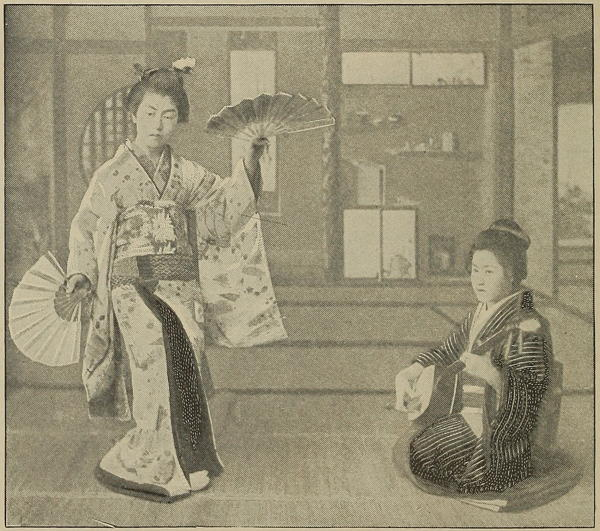

“A dancing girl”
Japan (1897)
In the evening in an adjoining tea-house [in Kyoto], we witnessed a geisha dance. The geishas are singing girls, who perform curious posturing dances with fans, masks, parasols, and handkerchiefs, used alternately as accessories and accompanied by the tuneful samisen and a kind of drum, shaped like an hour glass, beaten with the hands. These instruments are played by other girls seated on the floor. There were about twenty in all, mostly ranging from fourteen to sixteen years of age, and dressed in coloured crêpes and silk kimonos, with the silk obi or sashes, ornamented with chrysanthemums, &c.
Impressions of a Journey Round the World (1897)
We found on our arrival at the tea-house [in Kyoto] a number of geishas and four samisen girls ready for our reception. Having changed our boots for straw sandals we followed the neat, cheerful maidens (who were, according to the fashion of the country, continually bowing to us) to an upper storey of the house, where by the shifting of some sliding screens soon a petit salon particulier was arranged for us. The garden side was left open and hung with huge paper lanterns, the coloured light of which played magically on the grotesque dwarf trees and little rockeries of the garden. We squatted down on the soft matting of the floor, while the girls placed tiny lacquer tables five inches high in front of us, covered with small cups and neat little lacquer saucers containing various appetising dishes. Opposite us one of the girls was kneeling on the floor, regarding it her duty to entertain us and to keep our cups filled with saké. The samisen girls were seated in a row at one side of the room, while the geishas came slowly filing up in front of us before a screen of blazing gilt embroidery as background, flanked by two mighty bronze candelabra with burning wax candles. They look really quite sweet and charming, these graceful little girls, while they walk to and fro in their butterfly-coloured silk gowns, bowing gracefully, but their faces are thickly coated with white powder and their lips painted fiery red so that it is difficult to say if they are really pretty. The obi of each performer is of a different shade, and is tied at the back to a sash of an extraordinarily large size, and forms the most precious and prominent part of the dress. They look extremely picturesque. Beside the fan, the girl’s equipment consists of a little bag of powder and musk, some hana-gami (paper handkerchiefs), and a little case with comb, powder puff, and mirror. The dark black hairdress glitters under the adornment of a diadem, which is formed of artificial flowers, butterflies, and loosely hanging gold and silver threads. The dancing consists of slow, easy and graceful, pantomimic rhythmical movements of the arms and body in time with the music. Each dance has a certain meaning, but to the foreigner who does not understand the explanatory words of the accompanying song it is mostly very difficult to grasp its mystic significance. The geisha performs her dancing on the very small space of only a few square feet, and her principal endeavour is to execute all her movements, even the slightest and most insignificant ones, in a really accomplished, graceful manner, but her dancing is only from the waist up, while no attention is paid to the grace in moving the legs and feet, the latter generally remaining flat on the ground. Very pretty is their manœuvring with the fan and their coquettish play with the richly embroidered long sleeves of their kimono.
Japan As I Saw It (1912)
The costumes [of geisha] are as they were in the beginning, so is the music, and so are the gestures; the whole performance, in fact, is air-tight against innovations. Only the dancers themselves are young—so absurdly young that one feels they should still be going to kindergartens instead of amusing guests at banquets. They are also quaint with the quaintness of marionettes or coloured ivory carvings, and their distorted posturings are curious, even interesting, at first. But, after a little while, they pall, like the temples and the tombs, for want of variety. Three geishas dancing three dances will bore the average European in three quarters of an hour, and thirty-three will bore a Royal Personage—who is proof against any ordinary boredom—in three hours.
Behind the Screens (1910)
If one word, above all others, strikes a chord of interest, and draws the stranger like a magnet, in Japan, it is that of Geisha. The charms of the geisha girl have been read and written and sung, till the name is a synonym for the flowery kingdom, and the avowed object of every man’s visit is an acquaintance with these little charmers. The school which fits these young women in those fine accomplishments which have made the name renowned through the world is one of the most interesting features of the land.
The preconceived ideas of the fair lady are often shattered by personal contact. I had heard of her as coy and artless and innocent, loving and winning, modest, fascinating and beguiling, and I was not ready for the astonishing statement of the cranky old maid who had studied the girl for fifteen years and declared, “They are stealthy, wicked little cats, cats, all of them, and they do not seem to have a human instinct.”
This was a slap in the face, a rude awakening, after one had indulged the fanciful notions of literature, and had heaped charms unlimited about the geisha. “Is she morally impossible?” I asked. “Not positively impossible, but she is morally improbable. All her wiles and graces are for the ruin of her victims, and seldom is she better than an outcast.”
Thus pleasant theories were swept away, and the pretty geisha girl became the embodiment of vice made easy, if I was to believe the bald statement of the harsh critic, which I did not accept without reserve. Fifteen-year residents may have knowledge, and, likewise, they may have violent prejudice and vehement expression.
A Woman Alone in the Heart of Japan (1906)
◀ InnsProstitution ▶